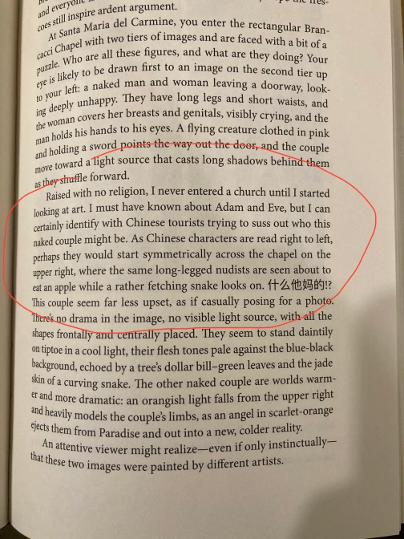

开始记周记的第二周，居然坚持住了，没有放鸽子，先表扬一下自己。这周天气正常了许多，没有天天下雨，也没有冷的不行，终于感觉自己交的阳光税值回来了一点。工作日基本都去了公司。虽然需要通勤，倒是也顺便增加了读书的时间。就是需要随时按住自己忍不住去刷手机的手，哈哈。
试了两个新菜谱。一个是宫保花菜，大铁锅炒花菜呲啦哗响的特别有烟火气。一次做了两天的量。第一天吃的时候感觉还是有点太素了，需要加点蛋白质。第二天回锅热的时候想起冰箱里还有一份老豆腐，就拿出来煎了一下再和花菜一起炒了炒，挺好吃的。另一个是无水炖鸡腿，汤汁挺鲜的，不过我可能煎蘑菇的时候盐放得不够多，有点偏淡了。另外救我自己的口味来讲鸡肉跟蔬菜的比例相比鸡肉有点太多了，下次再研究一下多加点什么蔬菜，再来试一下。
读了什么
上周开始读的Seeing Like an Artist，读了快一半的的样子弃了。一开始其实感觉到作者在炫耀和掉书袋的边缘疯狂试探，有点不妙。但是因为好奇他对几个博物馆有什么推荐就忍了继续看下来。到第七章真的太无语了。作者说因为自己不是在有信仰宗教的家庭长大的，虽然也有耳闻亚当夏娃，但看到Brancacci Chapel里Massacio和Masolino的壁画的时候还是非常困惑画面中的couple是什么人，因而非常能与在那里的中国游客感同身受，还夹了一句“什么他妈的”在段落里揣测所谓中国游客看到壁画时的反应…… 读得我太无语了，赶紧弃了弃了。

开了新坑，准备再试试读Moby Dick。去年差不多也是这个时候，作家李翊雲在网上办了一个共读Moby Dick的活动。我尝试跟了一下，但是因为节奏有点快，加上当时为了赶在旅行前读完一本别的书，只读了一点。后来时不时会想起这本书。特别是去年夏天去Monterey第一次近距离看到座头鲸的时候。不知道为什么潜意识里会觉得这是一本适合在天还冷的时候读的书。另外正好准备五月去一趟波士顿，希望可以在这之前读完吧。
听了什么
播客的话印象比较深的是Ezra Klein Show去年的一集讲深度阅读的，This Conversation About the ‘Reading Mind’ Is a Gift。印象比较深刻的几个点：深度阅读是一个后天习得的能力，并且需要练习来保持。现代人每天要面对大量的信息（绝大部分是电子媒介的），久而久之会习惯于只快速略读（skim，scan，scroll），失去深度阅读的能力。带来的问题有无法专注，遗漏重要的细节，以及没有时间思考。当阅读一本纸质书的时候，我们往往会一边读一边翻回前面去找之前读过的内容，会在书页上写写画画，这些都是帮助我们的大脑建立新的连结、加深理解的方式。而这些在电子媒介往往不适用。这并不是说新的技术不该被使用，世界倒退50年。造成问题的并不是新技术本身，是在我们还没有学会怎么驾驭这些技术的时候，已经成为了想利用这些技术无限最大化利益的资本的受害者。
这肯定不是第一个讲刷手机的害处的播客，但它也让我意识到我的一些阅读习惯的问题。这两年开始尝试多读书，也啃完了几本大部头。但其实每次读完都有点像走过场。读的时候也常常有种紧迫感，想要读快点再快点，很少有完全沉浸的阅读体验。其实是把处理电子信息的习惯带到了读书上。虽然读的内容不是ins或者微博，但实际对大脑来说都差不多，都是快进快出。
嘉宾提到的一些应对的办法：
- 处理信息的时候带着目的性去读，一边读一边问自己，这是值得我之后再细读的内容吗？大部分时候答案都是否定的，但如果是的话，尽可能换纸质媒介作深度阅读。如果没有办法转换媒介，放慢速度去读。
- 放 慢 速 度、放 慢 速 度 、放 慢 速 度
- 深度阅读的时候记笔记，最好是用纸笔写下来
- 每天保持一定的深度阅读量，给大脑时间和空间去思考或者idle，不要急于填满空白
德语复健
每天有在用多邻国，再表扬一下自己，坚持了。另外在奈飞上看了几集Holiday Secrets, 讲一家三代人在圣诞团聚时牵扯出的往事回忆。剧情一般，但是开着字幕当听力复健还可以。另外拍摄场景是在一个偏远的海边，天总是阴沉沉的，景色很美。不知道实际对应的地理位置是在那里，还挺像北加/俄勒冈的海岸线的。